Sistema web del método simplex para programación lineal: ingreso del modelo, forma
estándar, procedimiento iteración por iteración y lectura de la solución óptima.
Curso: Investigación de Operaciones — Universidad Mariano Gálvez de
Guatemala
Autores: Equipo Linear Studio
Versión: 1.0 · Octubre de 2026
Contenido
Índice
Qué es Linear Studio
Instalación y puesta en marcha
Paso 1 · Ingreso de datos
Paso 2 · Modelo y tabla inicial
Paso 3 · Pivoteo
Paso 4 · Resultado final
Sesión y modelos guardados
Módulo de transporte
Preguntas frecuentes
Estructura del proyecto
Cómo leer este manual
Cada sección explica qué se ve en pantalla y qué tiene que hacer el usuario. Las
capturas son reales: se tomaron de la aplicación en funcionamiento, no son dibujos.
ℹ
La interfaz está en español y el cálculo es exacto.
Todos los valores que se muestran provienen del algoritmo simplex real que corre en el
servidor: no hay tablas fijas ni resultados precargados.
Sección 1
Qué es Linear Studio
Linear Studio resuelve problemas de programación lineal con el método
simplex y muestra todo el procedimiento: la forma estándar del modelo,
cada iteración con su tabla antes y después, la variable que entra, la que sale, el
elemento pivote, la prueba de razones y las operaciones de fila.
Al abrir la aplicación aparece la pantalla de acceso: hay que iniciar
sesión o crear una cuenta para entrar. La sesión se conserva al recargar la página y el
nombre del usuario aparece siempre en el pie de la barra lateral.
El recorrido en cuatro pasos
Paso
Qué hace
Qué se ve
1 · Ingreso de datos
Escribes el modelo: variables, objetivo y restricciones.
Formulario con vista previa en vivo.
2 · Modelo y tabla inicial
El servidor lo convierte a forma estándar.
Ecuaciones, variables agregadas y la tabla inicial.
3 · Pivoteo
El simplex itera pivoteando.
Cada iteración con su explicación y sus tablas.
4 · Resultado final
Se lee y se interpreta la solución.
Métricas, verificación, interpretación y precios sombra.
✓
El modelo se conserva al cambiar de paso.
Puedes volver atrás, corregir el modelo en el paso 1 y volver a preparar: el modelo no se
pierde al navegar.
Sección 2
Instalación y puesta en marcha
Requisitos
Node.js 20 o superior (probado con 24.22.1 LTS).
MongoDB 6 o superior (probado con 8.0), local o Atlas.
npm 10 o superior.
1. Base de datos
# MongoDB local (Windows)
mongod --dbpath C:\data\db --bind_ip 127.0.0.1
# o con Docker
docker run -d --name mongo -p 27017:27017 mongo:8
2. Backend
cd backend
npm install
cp .env.example .env # ajusta MONGODB_URI si hace falta
npm run seed # carga los modelos de ejemplo
npm run dev # http://localhost:3000
3. Frontend
cd frontend
npm install
cp .env.example .env # VITE_API_URL=http://localhost:3000
npm run dev # http://localhost:5173
Variables de entorno del backend
Variable
Por defecto
Para qué sirve
PORT
3000
Puerto del servidor Express.
CORS_ORIGIN
http://localhost:5173
Origen permitido por CORS (el frontend de Vite).
MONGODB_URI
mongodb://127.0.0.1:27017/linear-studio
Conexión a la base de datos.
JWT_SECRET
clave de desarrollo
Firma los tokens de sesión. Cámbiala en producción.
!
Si guardas el proyecto en el disco de Windows y usas WSL.
Vite no recibe los eventos de cambio de archivos ahí: el archivo frontend/vite.config.js
ya incluye usePolling para que la recarga funcione.
Sección 3
Paso 1 · Ingreso de datos
Es la primera pantalla de trabajo, después de iniciar sesión. A la izquierda está el
formulario y a la derecha la vista previa, que se actualiza con cada
tecla: sirve para comprobar que el modelo es el que quieres antes de resolverlo.
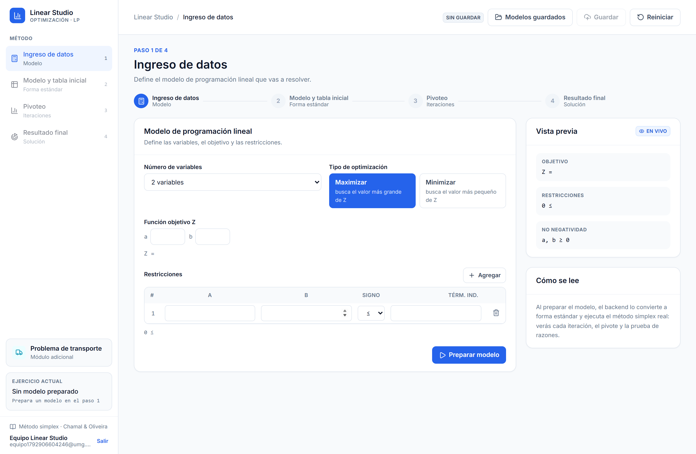
Figura 1. El formulario vacío. A la derecha, la vista previa con el objetivo, las
restricciones y la condición de no negatividad.
Cómo llenar el modelo
Número de variables. De 2 a 6. Solo se muestran las activas, con los
nombres a, b, c, d, e, f.
Tipo de optimización. Maximizar o minimizar. La opción elegida queda en
azul.
Función objetivo Z. Los coeficientes de cada variable.
Restricciones. Una fila por restricción, con un coeficiente por
variable, el signo (≤, ≥,
=) y el término independiente. El botón
Agregar añade una fila y el icono de la papelera la quita.
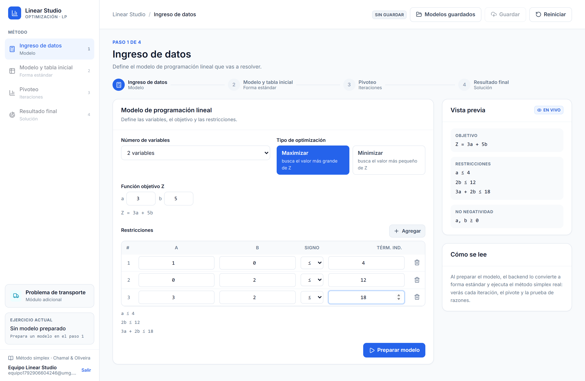
Figura 2. El modelo de referencia completo: MAX Z = 3a + 5b con
tres restricciones. La vista previa ya muestra las tres ecuaciones.
Errores de validación
Si algo falta, la aplicación lo dice antes de llamar al servidor, con los
mismos mensajes que usa el backend.
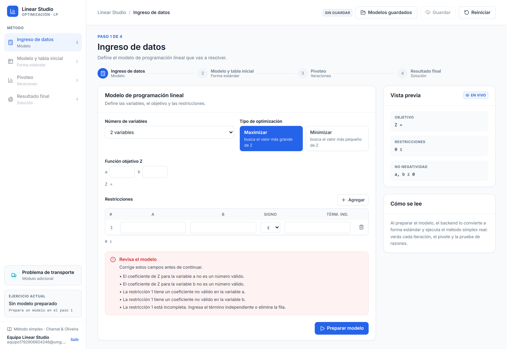
Figura 3. Una restricción sin término independiente se reporta como «La restricción 1
está incompleta. Ingresa el término independiente o elimina la fila».
✓
Botón «Preparar modelo». Envía el modelo al servidor, que lo resuelve y
devuelve todo el procedimiento. Si el problema no tiene solución óptima (es infactible o
no acotado) también lo indica con una explicación clara.
Sección 4
Paso 2 · Modelo y tabla inicial
Aquí se ve el modelo ya convertido a forma estándar: las mismas
restricciones, pero con una variable de holgura (≤), de exceso y
artificial (≥) o solo artificial
(=) para poder tabularlo.
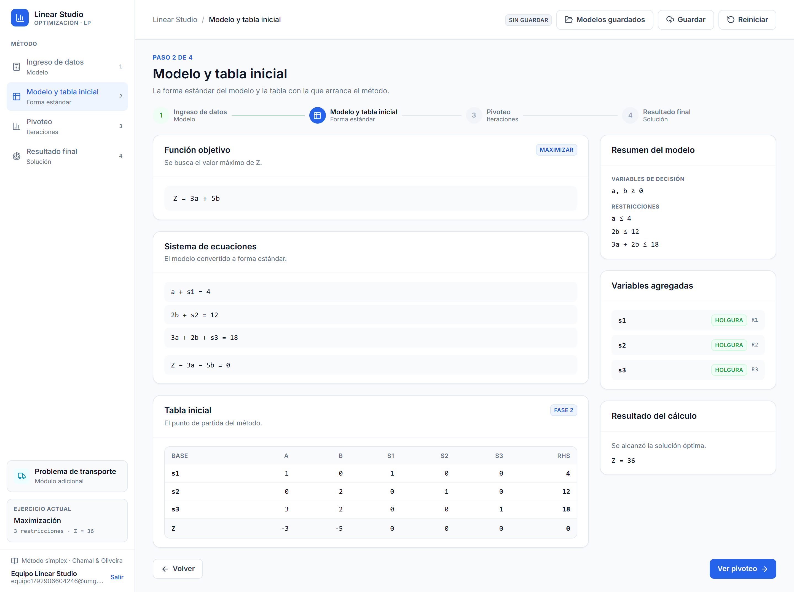
Figura 4. La forma estándar del modelo y la tabla inicial, con las variables básicas
s1, s2, s3.
Qué mirar en esta pantalla
Sistema de ecuaciones: una línea por restricción, ya con las variables
agregadas.
Panel de variables agregadas: cada holgura, exceso o artificial, con la
restricción a la que pertenece.
Tabla inicial: la fila Z guarda los costos
reducidos; la última columna es el término independiente (RHS).
ℹ
Si hay una restricción ≥ o =,
el método empieza en la Fase 1. La tabla inicial se rotula W
y el objetivo es minimizar la suma de las variables artificiales
A. Cuando W llega a cero se pasa a
la Fase 2 con el objetivo Z.
Sección 5
Paso 3 · Pivoteo
Es el corazón del sistema: cada iteración del simplex, con su
explicación. La iteración 0 es la tabla inicial; desde ahí se navega con
Anterior, Siguiente o el selector Ir a la
iteración.
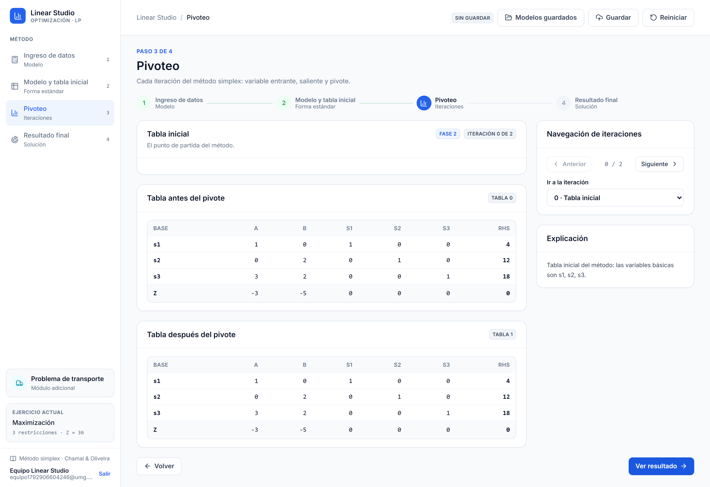
Figura 5. La iteración 0: la tabla con la que arranca el método.
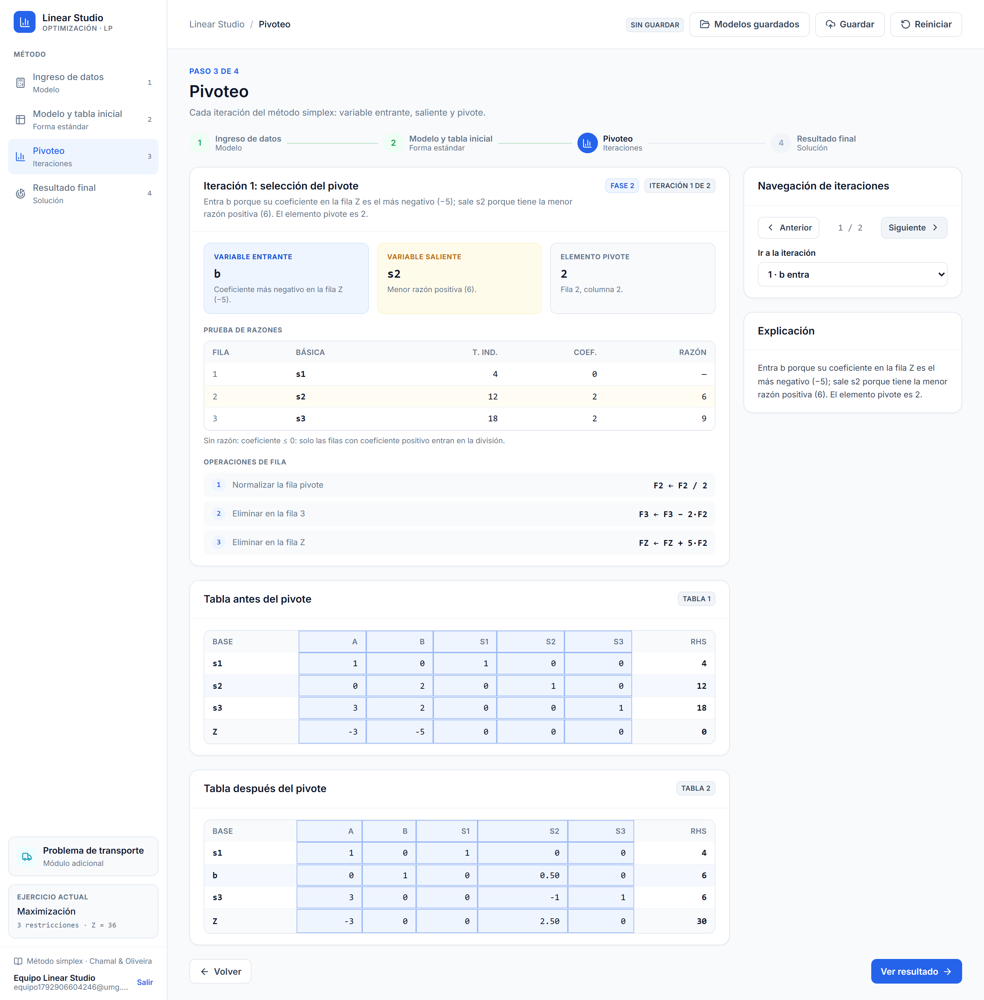
Figura 6. La iteración 1 completa: las tres tarjetas de decisión, la prueba de razones,
las operaciones de fila y las tablas antes y después con el pivote resaltado.
Las tres tarjetas
Tarjeta
Color
Qué significa
Variable entrante
Azul
La que entra a la base. Se elige por tener el coeficiente más negativo en la fila Z
(el costo reducido más favorable).
Variable saliente
Ámbar
La que sale de la base. Se elige por la menor razón de la prueba de
cocientes.
Elemento pivote
Neutro
El número que se hace 1 al dividir la fila pivote.
La prueba de razones
Solo entran en la división las filas con coeficiente positivo en la
columna que entra. Las demás se marcan con «—» y la nota lo explica. La fila que sale
queda resaltada en ámbar.
Las operaciones de fila
Se listan numeradas y con la fórmula exacta, para que se pueda seguir el álgebra:
F2 ← F2 / 2 normaliza la fila pivote y
FZ ← FZ + 5·F2 elimina la columna en la fila Z.
✓
El resaltado del pivote. En las tablas, la columna y la fila del pivote
quedan en azul muy suave y la celda del pivote tiene además un borde: se ve de un vistazo
qué se está pivoteando.
Sección 6
Paso 4 · Resultado final
La solución, con todo lo necesario para verificarla: el valor de Z, el de
cada variable, el de las holguras, la comprobación restricción por restricción y la
interpretación en lenguaje natural.
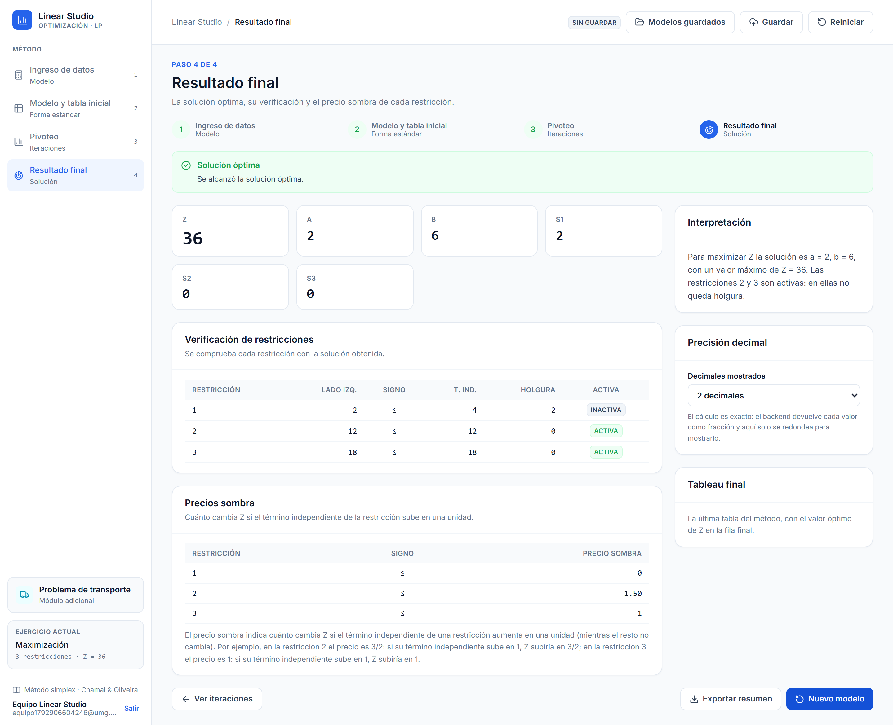
Figura 7. El resultado del modelo de referencia: Z = 36 con a = 2, b = 6 y s₁ = 2.
La tabla de verificación
Se comprueba cada restricción sustituyendo la solución: el lado izquierdo, el signo, el
término independiente, la holgura que queda y si la restricción está activa
(es decir, si se cumple con igualdad). En el ejemplo, las restricciones 2 y 3 están activas
porque no les queda holgura.
Los precios sombra
Dicen cuánto cambia Z si el término independiente de una restricción sube en una
unidad. En el ejemplo, el precio sombra de la restricción 2 es 1.5: si su término
independiente pasa de 12 a 13, el valor óptimo pasaría de 36 a 37.5.
ℹ
La precisión decimal no recalcula nada. El cálculo del servidor es
exacto (fracciones); el selector solo cambia cuántos decimales se muestran. Es la
diferencia entre 3/2 y 1.50.
Acciones disponibles
Ver iteraciones: vuelve al paso 3.
Exportar resumen: descarga un archivo de texto con el modelo, la
solución y las restricciones.
Nuevo modelo: limpia todo y vuelve al paso 1.
Sección 7
Sesión y modelos guardados
La aplicación empieza con la pantalla de acceso. Desde ahí se inicia
sesión o se crea una cuenta; la sesión queda guardada en el navegador, así que al
recargar la página se entra directo y el nombre del usuario sigue visible en el pie de
la barra lateral.
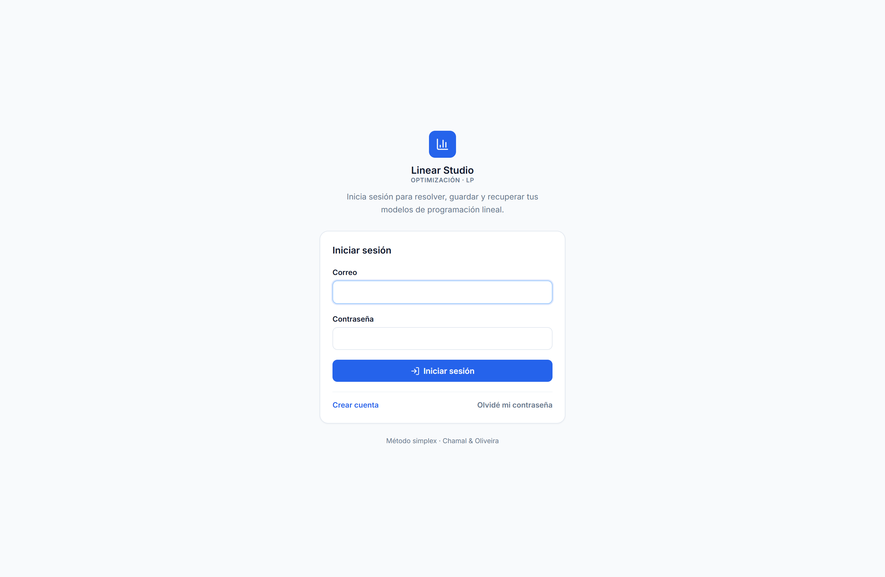
Figura 8. La pantalla de acceso es la primera vista de la aplicación: iniciar sesión,
crear cuenta o restablecer la contraseña.
Figura 9. Con la sesión iniciada, el pie de la barra lateral muestra el nombre y el
correo del usuario, junto al botón Salir.
El flujo
En la pantalla de acceso, crea una cuenta con nombre, correo y contraseña (mínimo 6 caracteres).
Al guardar un modelo, el estado de la barra superior pasa a Guardando… y luego a Guardado.
El modelo se almacena con su resolución completa.
Desde Modelos guardados puedes abrir un modelo: se recupera el
procedimiento entero sin volver a calcular.
!
Recuperación de contraseña sin servidor de correo. Por simplicidad, el
token de recuperación se muestra en pantalla (modo demostración) y se usa para
restablecer la contraseña. En producción se enviaría por correo.
Sección 8
Módulo de transporte
Como extensión, el sidebar incluye un módulo de problemas de transporte:
se definen las ofertas de cada origen, las demandas de cada destino y los costos de cada
ruta, y la aplicación compila esa matriz a un modelo de programación lineal que resuelve
con el mismo método simplex.
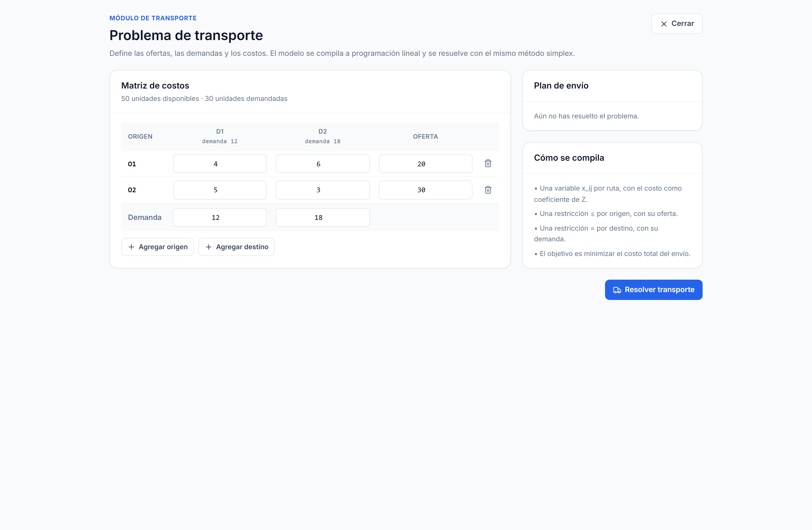
Figura 10. El editor de la matriz de costos con las ofertas y las demandas.
Cómo se compila
Una variable x_ij por ruta, con el costo como coeficiente de Z.
Una restricción ≤ por origen, con su oferta.
Una restricción = por destino, con su demanda.
El objetivo es minimizar el costo total del envío.
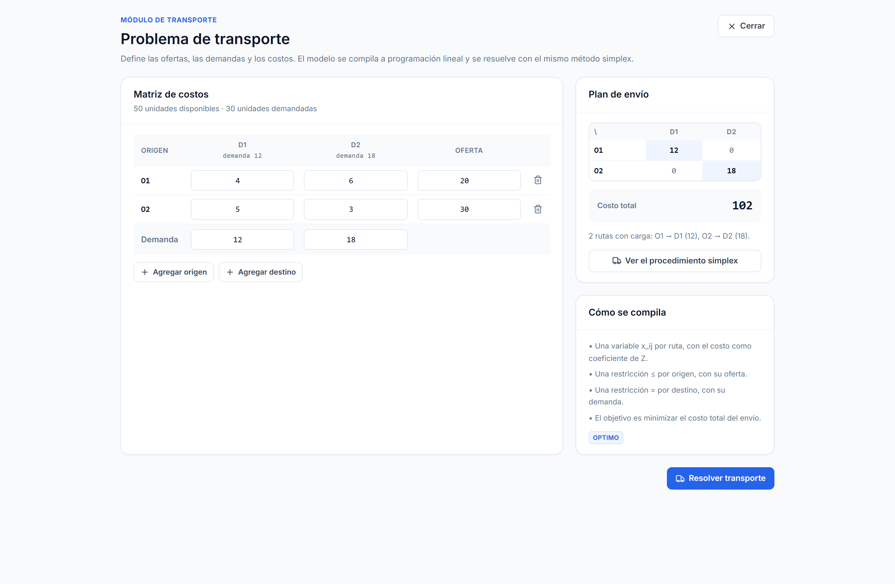
Figura 11. El plan de envío: las rutas con carga resaltadas y el costo total.
✓
El plan de envío es la solución óptima. En el ejemplo de la figura, con
ofertas de 20 y 30 unidades y demandas de 12 y 18, el costo mínimo es
102: se envían 12 unidades de O1 a D1 y 18 de O2 a D2. Los precios sombra
de las demandas son 4 y 3, que es el costo de servir una unidad adicional en cada
destino.
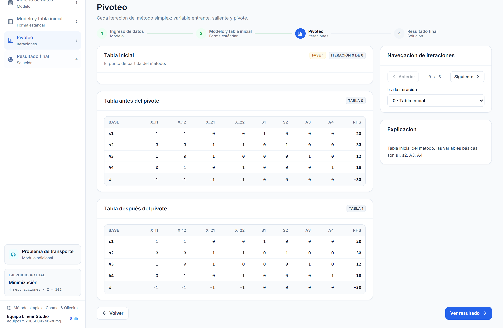
Figura 12. El botón «Ver el procedimiento simplex» abre el pivoteo del modelo compilado,
con su Fase 1 y su Fase 2.
Sección 9
Preguntas frecuentes
¿El resultado está precargado?
No. Cada número que aparece lo calculó el servidor ejecutando el simplex sobre el modelo
que escribiste, con aritmética exacta de fracciones.
¿Por qué el problema mínimo usa un objetivo con signo negativo?
El tableau siempre maximize. Para minimizar Z se resuelve el
problema auxiliar MAX (−Z), que se rotula Z′,
y al final se revierte el signo para presentar el valor de Z. La
propia pantalla lo explica.
¿Qué pasa si el problema no tiene solución?
Si es infactible (las restricciones se contradicen) o no
acotado (el objetivo se puedeImprove sin límite), la aplicación lo indica con una
alerta y una explicación, y deja las iteraciones realizadas para poder ver el
procedimiento.
¿Cómo se eligen las variables entrante y saliente?
La entrante es la de coeficiente más negativo en la fila Z; si hay empate, la más a la
izquierda. La saliente es la de menor razón; si hay empate, la de la fila más arriba.
Además, a partir de la iteración 50 se aplica la regla de Bland para garantizar que el
método termina.
¿Puedo volver atrás sin perder lo escrito?
Sí. El modelo se conserva al cambiar de paso; solo se descarta si pulsas
Reiniciar o Nuevo modelo, y en ese caso la aplicación
pide confirmación.
Sección 10
Estructura del proyecto
mr-simplex/
├── backend/ API (Express + MongoDB)
│ ├── src/
│ │ ├── services/ solver simplex: forma estándar, pivoteo, dos fases
│ │ ├── controllers/ controladores de la API
│ │ ├── routes/ rutas
│ │ ├── middlewares/ CORS, errores y autenticación
│ │ ├── models/ esquemas Mongoose
│ │ └── utils/ fracciones exactas, tokens y contraseñas
│ ├── seed/ script de carga inicial de datos
│ ├── test/ pruebas (Vitest)
│ └── HISTORIAS.md control de avance
│
├── frontend/ interfaz (React + Vite + Tailwind)
│ ├── src/
│ │ ├── steps/ los cuatro pasos del método
│ │ ├── layout/ barra lateral, barra superior, indicador
│ │ ├── components/ tabla del simplex, sesión, transporte
│ │ ├── estado/ estado global de la aplicación
│ │ ├── services/ llamadas a la API
│ │ └── styles/ tokens del sistema de diseño
│ ├── documentacion/ este manual y sus capturas
│ ├── test/ pruebas (Vitest + Testing Library)
│ └── HISTORIAS.md control de avance
│
Comandos útiles
Comando
Qué hace
backend: npm test
Corre las 271 pruebas del backend.
backend: npm run coverage
Pruebas con informe de cobertura.
backend: npm run seed
Recarga los modelos de ejemplo.
frontend: npm test
Corre las 39 pruebas del frontend.
frontend: node scripts/capturas.mjs
Repite el recorrido real y regenera las capturas de este manual.
Linear Studio · Manual de usuario · Investigación de Operaciones — Universidad Mariano
Gálvez de Guatemala · Octubre de 2026